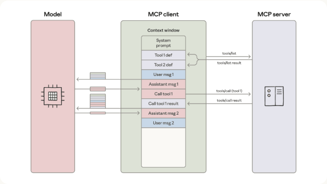

class: center, middle # Code Execution with MCP ## Building More Efficient AI Agents .small[Based on the Anthropic Engineering article (Adam Jones & Conor Kelly)] --- class: center, middle # The Problem ## As MCP scales, agents drown in tokens --- # Why Agents Get Slow & Expensive When agents connect to **hundreds or thousands of tools** across many MCP servers: 1. **Tool definitions overload the context window** - All schemas loaded upfront - Hundreds of thousands of tokens before the first user message 2. **Intermediate results flow through the model** - Every tool output passes through context - Large data gets re-written by the model into the next call --- class: center, middle # The Classic MCP Loop <p></p> .small[Each tool call and result passes back through the model.] --- # Example: Token Bloat **Task:** "Download a 2-hour meeting transcript from Drive and attach it to a Salesforce lead." ``` TOOL CALL: gdrive.getDocument(...) → 50,000-token transcript loaded into context TOOL CALL: salesforce.updateRecord( data: { Notes: "...full transcript re-written..." } ) → model writes the entire transcript again ``` The transcript flows through context **twice**. Larger docs can exceed the context window entirely. --- class: center, middle # The Idea ## Present MCP servers as a **code API** ## Let the agent **write code** to call them --- # Tools as Files on a Filesystem ``` servers/ ├── google-drive/ │ ├── getDocument.ts │ └── index.ts ├── salesforce/ │ ├── updateRecord.ts │ └── index.ts └── ... ``` Each tool = one file. The agent **explores the filesystem** and loads only the definitions it needs. --- # Same Task — As Code ```ts import * as gdrive from './servers/google-drive'; import * as salesforce from './servers/salesforce'; const transcript = (await gdrive.getDocument({ documentId: 'abc123' })).content; await salesforce.updateRecord({ objectType: 'SalesMeeting', recordId: '00Q5f000001abcXYZ', data: { Notes: transcript } }); ``` **Result:** ~150,000 tokens → ~2,000 tokens ### A 98.7% reduction. --- class: center, middle # Five Big Wins --- # 1. Progressive Disclosure - Models are great at navigating filesystems - Read tool definitions **on demand** - Or expose a `search_tools` tool with a `detail_level` (name / name+desc / full schema) Only pay tokens for tools you actually use. --- # 2. Context-Efficient Results Filter & transform **in the sandbox**, not in the model: ```ts const allRows = await gdrive.getSheet({ sheetId: 'abc123' }); const pending = allRows.filter(r => r.Status === 'pending'); console.log(`Found ${pending.length} pending orders`); console.log(pending.slice(0, 5)); ``` Model sees 5 rows. Not 10,000. --- # 3. Real Control Flow Loops, conditionals, retries — native code, not chained tool calls: ```ts let found = false; while (!found) { const msgs = await slack.getChannelHistory({ channel: 'C123' }); found = msgs.some(m => m.text.includes('deployment complete')); if (!found) await new Promise(r => setTimeout(r, 5000)); } ``` Lower latency. No model round-trip per iteration. --- # 4. Privacy-Preserving Operations Intermediate results stay in the sandbox by default. The MCP client can **tokenize PII** before the model ever sees it: ```js [ { salesforceId: '00Q...', email: '[EMAIL_1]', phone: '[PHONE_1]', name: '[NAME_1]' }, ... ] ``` Real values flow Drive → Salesforce. Model only sees tokens. --- # 5. State Persistence & Skills Agents can write to disk and resume later: ```ts await fs.writeFile('./workspace/leads.csv', csvData); ``` And persist their **own code** as reusable skills: ```ts // ./skills/save-sheet-as-csv.ts export async function saveSheetAsCsv(sheetId: string) { ... } ``` Over time the agent builds its own toolbox. --- class: center, middle # Trade-offs Running agent-generated code requires: **Sandboxing** · **Resource limits** · **Monitoring** Weigh token & latency savings against the operational + security overhead. --- class: center, middle # Takeaway ## The novel problems of agents ## have **classic software-engineering** solutions. ### Let agents *write code* to talk to MCP. .footnote[Source: anthropic.com/engineering/code-execution-with-mcp]